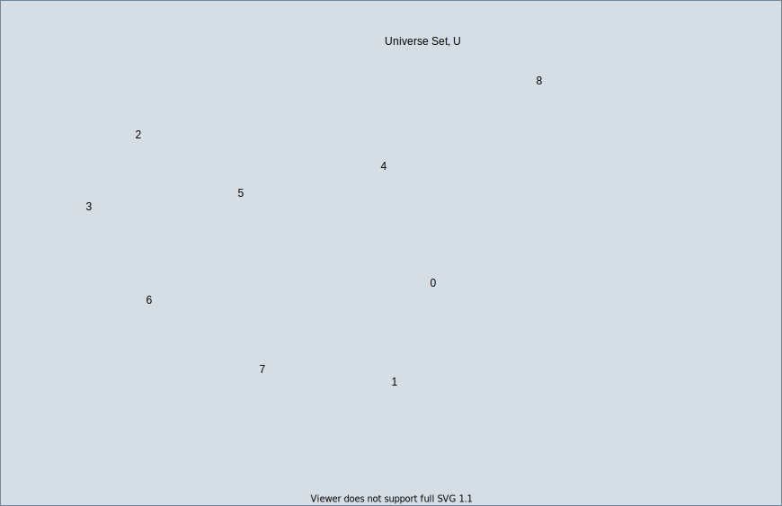

Universal set
A Universal set, denoted \(U,\) is the super set that contains all relevant elements in the current context. We begin with a general example to help illustrate this concept.
Example 1: Chose the set of numbers \(\{ 1, 2, 3, 4, 5, 6, 7, 8\}\) to be the Universal set. The rectangle in the diagram below represents the Universal set \(U\) with the elements inside of the rectangle.

The Universal set is the grey rectangle enclosing the entire collection of all possible elements, the
numbers 1 through 8.
Example 1: Suppose there is a need to keep track of the colors used in an editor. The collection of colors does not have an overt, natural ordering that would be necessarily expected, so a set is a good structure to contain the colors. Using the HEX color triplet notation our Universal set S is
\(S\) = { #E27D60, #85DCB, #EBA87C, #C38D9E }
This set in Example 1 above is a Universal set in the sense that it contains all of the colors in the context to the situation. If a designer wanted to broaden the perspective to consider all possible colors that could be used in the editor, the Universal set would change.
Lets look at a few more examples of a Universal set to help navigate the subtle issue of perspective and how context for the set plays a huge role.
Example 2: A program is keeping track of days of the week to schedule an event. The Universal set U in this case contains all days in a week:
\(U\) = {Sunday, Monday, Tuesday, Wednesday, Thusday, Friday, Saturday}
On the other hand, if the events cannot take place on Saturday or Sunday, then the Universal set U is actually
\(U\) = { Monday, Tuesday, Wednesday, Thusday, Friday}
Tying in the discussion of important examples of sets to the idea of a Universal set, we can take the set \(R\) of all Real numbers to be the Universal set if we are dealing with most mathematical problems. In particular, when given an equation for a line \(y = mx + b\) we are often interested in knowing where this line crosses the x-axis and the y-axis.
Example 3: Graph the line \(y = 2x + 1\) on the \(x-y\) plane. We are often interested in finding a value that when substituted into the equation for \(x\) gives the expression \(y = 0.\) To find this value, \(x\), we start by replacing \(y\) with \(0\) and solve for \(x.\)
\[y\ \ \ = 2x + 1\] \[0\ \ \ = 2x + 1\] \[-1 = 2x\] \[\frac{-1}{2} = x\]So that we have proven through a series of equivalent equations, the value of \(x\) must be \(\frac{-1}{2}\) in this exprssion for \(y\) to equal \(0.\) The solution \(x\) that we were looking for came from the special set \(R\) of all real numbers which serves as the Universal set in this example.
If the purpose is to instead classify points in the \(x-y\) plane as falling on one side or the other of the line \(y = 2x +1,\) then the context is different and this changes the Universal set.
Example 4: Find the points \((x,y)\) below the graph of the line \(y = 2x + 1\) on the \(x-y\) plane. The Universal set in this context is \(U\) defined by the rule \(U = (x,y)\) where \(x\) and \(y\) are in \(R.\) The solution to this problem is also a set of 2-tuples \((x,y)\), a subset of \(U,\) that we can define with the rule \(S\) is the collection of all \((x,y)\) where \(y < 2x + 1,\) and \(x\) and \(y\) are both in \(R.\)